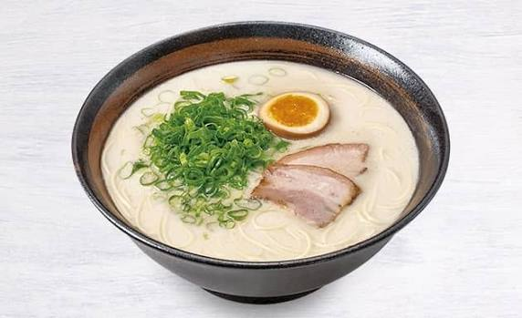

Tonkotsu Ramen Recipe

Instructions
- Boil the pork bones and pork hock briefly, then rinse them clean.
- Pressure cook the bones, hock, garlic, ginger, and water for 60 minutes.
- Prepare the cold brew dashi with kombu, shiitake mushrooms, anchovies, and water.
- Make the shoyu tare by simmering sake, mirin, soy sauce, water, kombu, and salt.
- Add the onion, green onions, katsuobushi, sake, and rice vinegar to the broth.
- Boil the broth with the dashi for another 30 minutes, then strain it.
- Cook the fresh ramen noodles according to the package instructions.
- Add shoyu tare, hot tonkotsu broth, noodles, and toppings to each bowl.